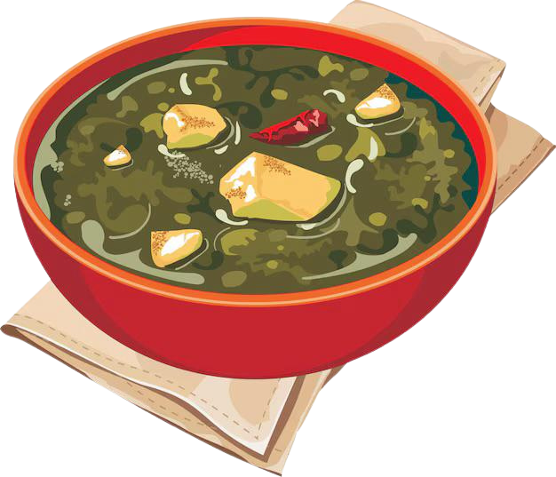

Palak Paneer Recipe
Cottage cheese cubes in a spinach-based curry.
Ingredients
For the Palak (Spinach) Puree:
- 1 pound (450g) fresh spinach leaves, washed and trimmed
- 2 green chilies (adjust to taste)
- 1 teaspoon oil
For the Curry:
- 2 tablespoons oil or ghee
- 1 tablespoon unsalted butter
- 1 teaspoon cumin seeds
- 1 medium onion, finely chopped
- 3 garlic cloves, minced
- 1 teaspoon grated ginger
- 2 medium tomatoes, finely chopped or pureed
- 1 teaspoon ground cumin
- 1 teaspoon ground coriander
- 1/2 teaspoon turmeric powder
- 1/2 teaspoon red chili powder (adjust to taste)
- 1/2 teaspoon garam masala
- 1/2 cup (120ml) heavy cream or cashew cream (optional)
- 8-10 ounces (225-280g) paneer, cubed
- Salt, to taste
- 1/4 cup (60ml) water or as needed
- 1 teaspoon dried fenugreek leaves (kasuri methi) (optional)
For Garnish:
- 1 tablespoon fresh cream (optional)
- 1 tablespoon chopped cilantro
Preparation Time
- Prep time: 20 minutes
- Cook time: 25 minutes
- Total time: ~45 minutes
Instructions
- Blanch the Spinach:
- Bring a large pot of water to a boil. Add the spinach leaves and cook for 2 minutes.
- Immediately transfer the spinach to a bowl of ice water to preserve its green color.
- Drain and blend the spinach with the green chilies and 1 teaspoon of oil into a smooth puree. Set aside.
- Prepare the Curry Base:
- Heat 2 tablespoons of oil or ghee in a pan over medium heat. Add the cumin seeds and let them sizzle.
- Add the chopped onion and sauté until golden brown, about 5-7 minutes.
- Stir in the garlic and ginger, cooking for 1-2 minutes until fragrant.
- Add the chopped or pureed tomatoes, cumin, coriander, turmeric, and red chili powder. Cook for 5-7 minutes until the oil separates from the mixture.
- Add Spinach Puree:
- Stir the spinach puree into the pan and mix well. Add a little water if the mixture is too thick.
- Simmer for 5 minutes on low heat.
- Add Paneer and Cream:
- Gently fold in the paneer cubes. If using, add the cream and mix.
- Simmer for another 5 minutes, allowing the paneer to absorb the flavors.
- Crush the dried fenugreek leaves between your palms and sprinkle them over the curry (optional).
- Adjust Seasoning:
- Taste and adjust salt and spices as needed.
- Serve:
- Garnish with a swirl of fresh cream and chopped cilantro. Serve hot with naan, roti, or steamed basmati rice.
Enjoy the wholesome and vibrant flavors of Palak Paneer, a classic North Indian dish!